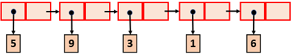

PROCESAMIENTO DE DATOS ARBITRARIAMENTE GRANDES
ACTIVIDAD 2
Ubique el cursor del mouse sobre los recuadros para observar los objetivos.

Responda la siguiente pregunta.

PROCESAMIENTO DE DATOS ARBITRARIAMENTE GRANDES
ACTIVIDAD 2
Ubique el cursor del mouse sobre los recuadros para observar los objetivos.